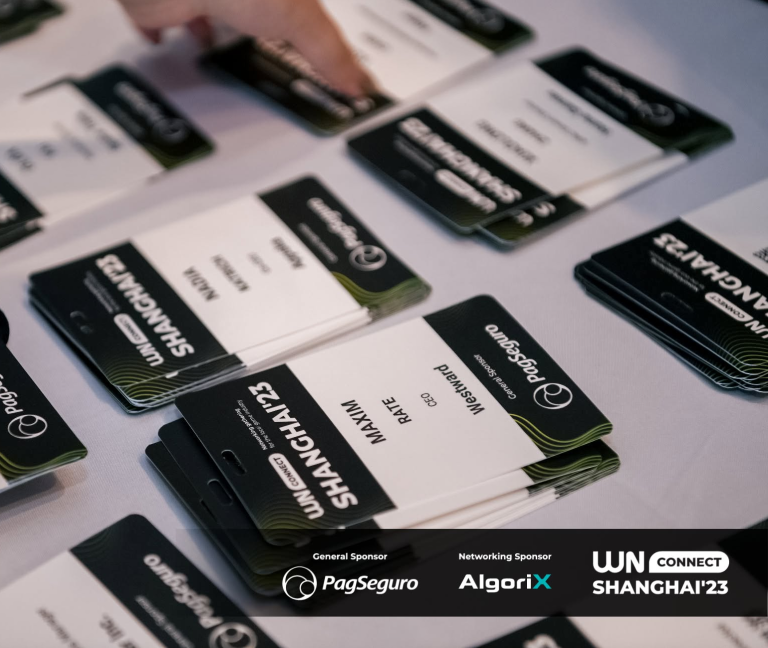
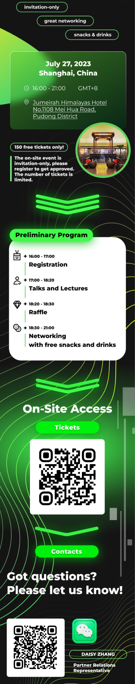
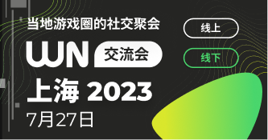
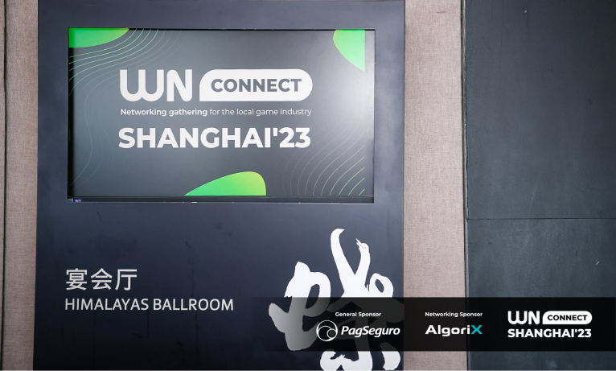

Задача
Разработать оформление WN Connect Shanghai’23 для лендинга, рекламных публикаций и площадки. Подготовить материалы на английском и китайском: анонсы, программу, бейджи и графику для экранов.
Айдентика, рекламная графика и материалы площадки для встречи игровой индустрии в Шанхае.
Лендинг, бейджи, анонсы на английском и китайском, материалы для WeChat и оформление экрана на площадке.
Лендинг WN Connect Shanghai’23 с информацией о встрече и регистрацией.

Бейджи участников WN Connect Shanghai’23.

Длинный макет для WeChat: программа, билеты и контакты организаторов.

Вертикальный анонс встречи для соцсетей.

Публикация с анонсом программы мероприятия.

Анонс WN Connect Shanghai’23 на китайском языке.

Благодарность участникам и спонсорам после встречи.

Фирменная графика на экране у входа в Himalayas Ballroom.
WN Connect Shanghai’23 — встреча представителей игровой индустрии, которая прошла 27 июля 2023 года в Jumeirah Himalayas Hotel в Шанхае, накануне ChinaJoy. Участники слушали выступления и общались на площадке; платформа WN Hub позволяла знакомиться и договариваться о встречах онлайн.
Разработать оформление WN Connect Shanghai’23 для лендинга, рекламных публикаций и площадки. Подготовить материалы на английском и китайском: анонсы, программу, бейджи и графику для экранов.
В основу графики положил тёмный фон, яркие зелёные градиенты и тонкие волнообразные линии. Адаптировал стиль для лендинга, квадратных и вертикальных анонсов, а также длинного макета с программой для WeChat. Ту же графику использовал на бейджах и экране площадки.